Zdjęcie powinno być cyfrowym odzwierciedleniem rzeczywistości, otaczającego nas świata, przekazując jednocześnie emocje i wewnętrzny świat wartości i przekonań autora. Fotograf, poszukujący wyrazu, musi zadbać o to, aby interpretacja jego dzieł nie ograniczała się jedynie do tego, co jest przedstawione, ale obejmowała głębszą analizę treści, wzbudzała konstruktywną debatę i ukazywała przedmiotowe zagadnienie w innym świetle.
Chce on oddzielić dosłowność przedstawionych treści od ich 'duchowego' znaczenia, skupiając się przede wszystkim na drugim, dbając jednocześnie o subtelność i starając się wzbudzić ciekawość potencjalnego widza. Ten element ekspresji nie jest łatwy do osiągnięcia, gdyż często balansuje na granicy dobrego smaku, uwzględniając różnorodność gustów potencjalnych odbiorców. Dla jednych zdjęcia będą ukazywać to, co dosłownie jest na nich przedstawione, dla innych zaś zawsze będą wyrazem piękna w formie cyfrowej.
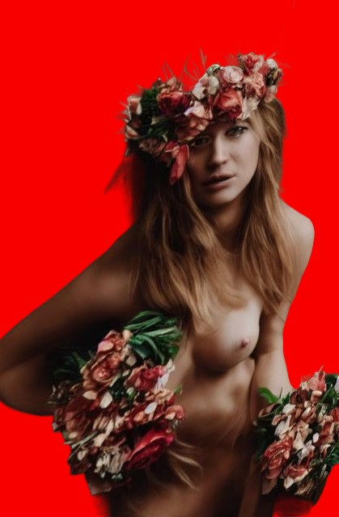
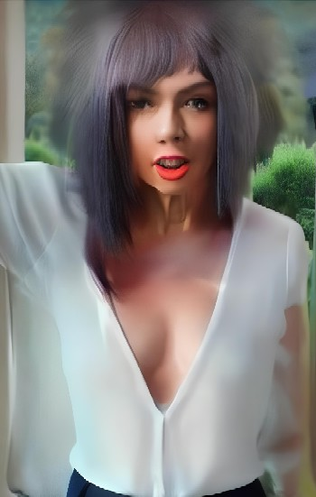
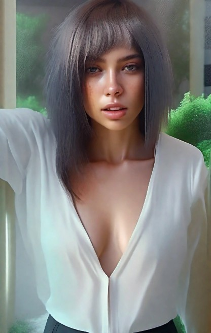
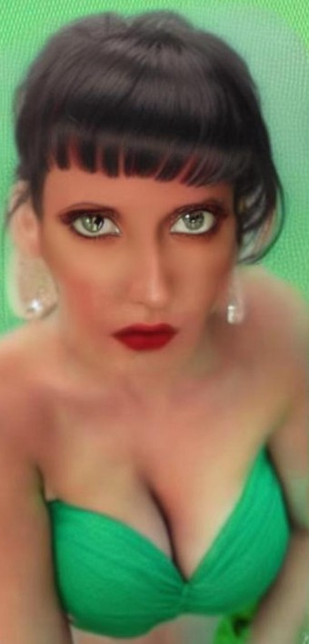
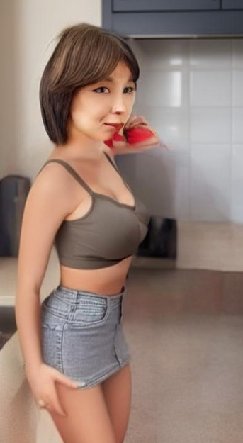
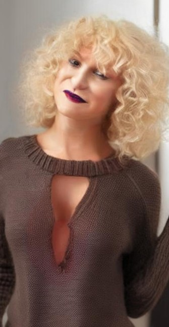
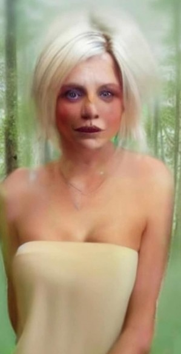
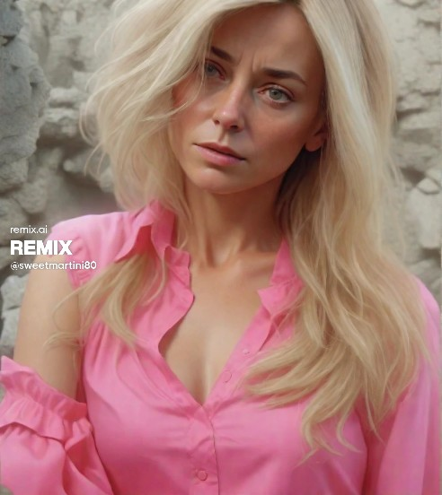
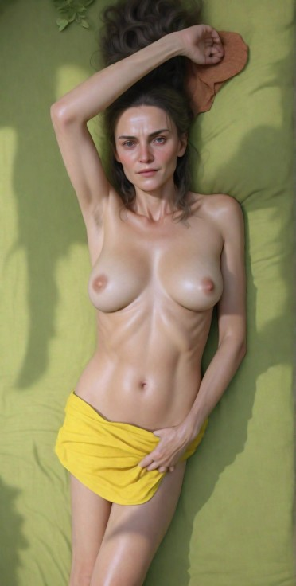
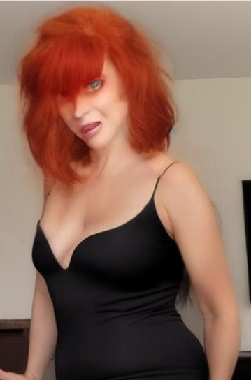
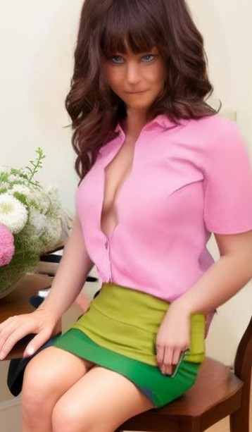
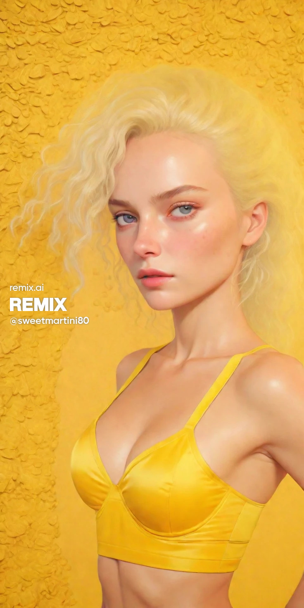